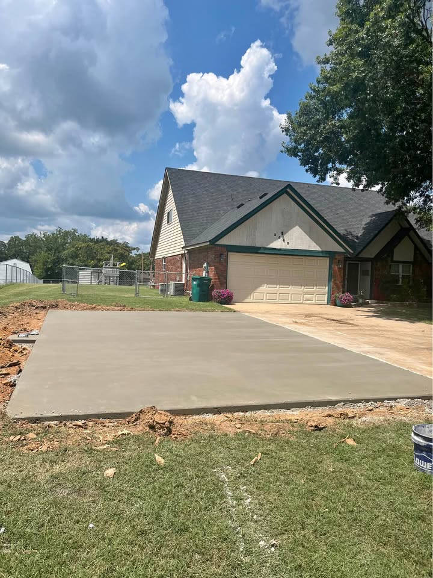
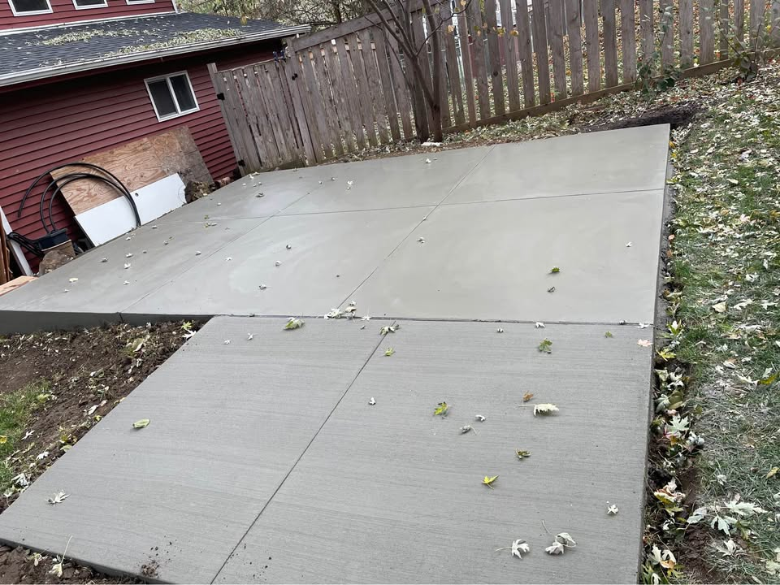
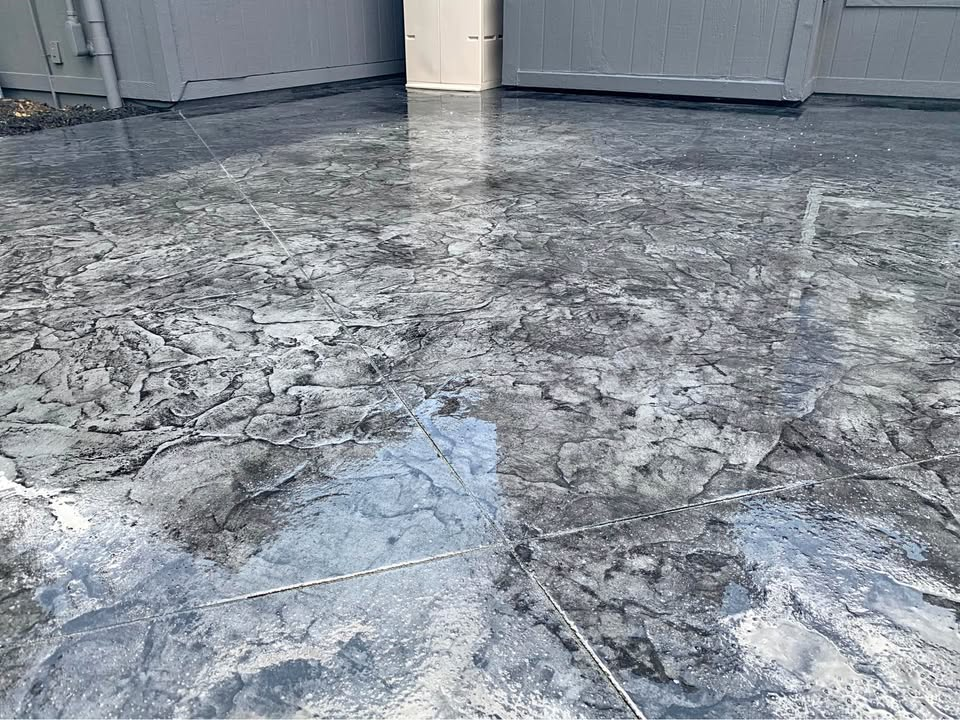
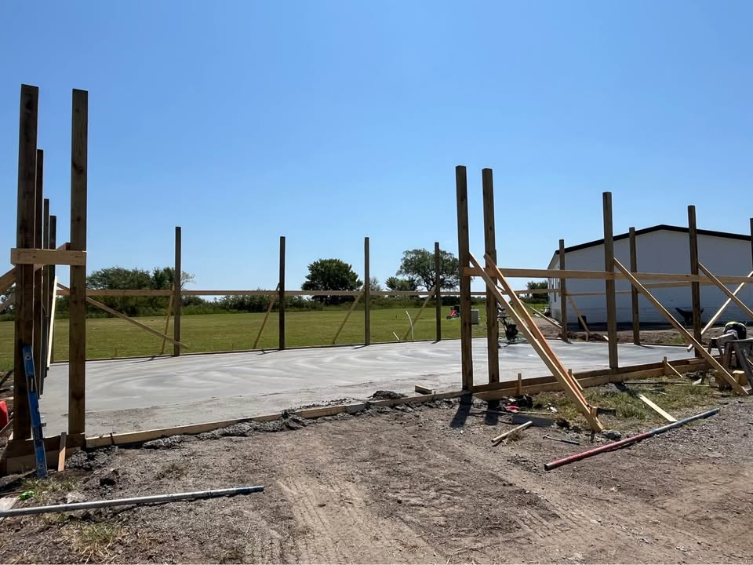
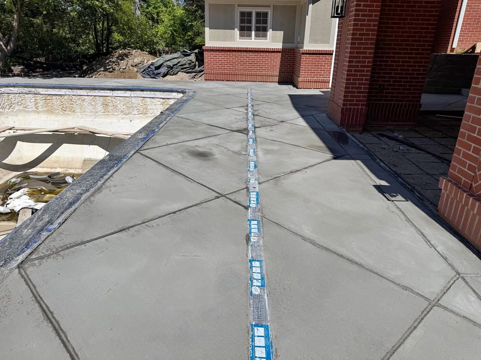
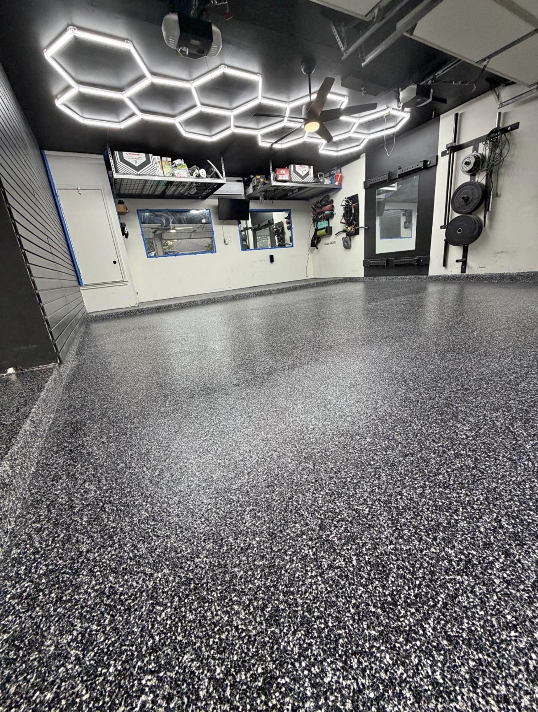

Concrete Driveway Installation
New driveways, approach work, and residential concrete flatwork for homes in Enid.
Enid Concrete Pros provides driveway, patio, slab, concrete floor coating, stamped concrete, and repair service information for homeowners and property owners in Enid and nearby areas.

Use the form below, call (580) 448-2888, or text to ask about your concrete project.
Prefer a faster response? Call or text the number above after submitting the form.
Service availability, scheduling, and project fit can vary based on location, scope, and current workload.

New driveways, approach work, and residential concrete flatwork for homes in Enid.
Removal and replacement for aging, cracked, uneven, or failing driveway sections.

Outdoor patio surfaces for backyards, seating areas, and usable exterior space.

Decorative concrete finishes for patios, walkways, and exterior accent surfaces.

Shop slabs, shed pads, garage slabs, and other utility-focused concrete projects.

Crack repair, surface damage review, and repair-versus-replacement evaluation.

Concrete floor coating options for better appearance, cleanup, and surface protection.
Concrete work in Oklahoma needs to account for heat, cold snaps, drainage, soil movement, and cracking risk over time. A driveway or patio that looks fine on day one can become a problem later if prep and slope are ignored.
That is why service type, base preparation, grading, water runoff, and finish choice matter as much as the pour itself.
Cracking can be affected by temperature swings, moisture changes, sub-base issues, poor drainage, and ordinary shrinkage over time.
If there is significant settlement, repeated cracking, poor drainage, or widespread surface failure, replacement may be worth comparing against repair.
It may require periodic cleaning and resealing depending on exposure, wear, and finish type.